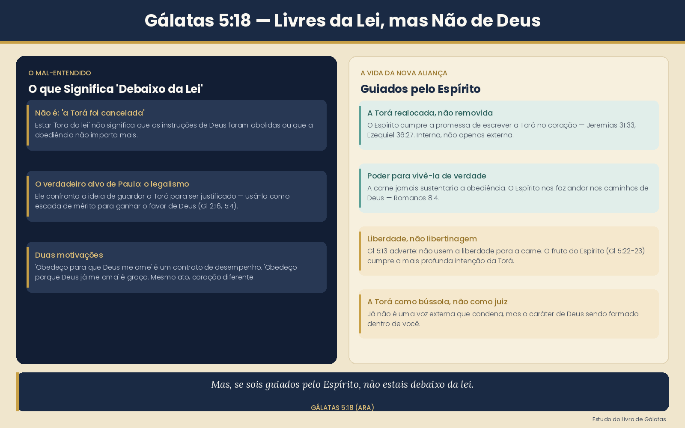

"Mas, se sois guiados pelo Espírito, não estais debaixo da lei."
Ser guiado pelo Espírito não significa jogar fora as instruções de Deus — significa que finalmente temos o poder de vivê-las de verdade.
Em Gálatas, Paulo escrevia a crentes gentios que estavam sendo pressionados por certos mestres a serem circuncidados e a guardar a Torá para serem salvos. O problema de Paulo não era com a Torá — era com o uso da Torá como uma escada para subir até Deus.
Pense assim: imagine alguém dizendo "Obedeço a Deus para que Ele me ame." Isso é estar debaixo da lei — um contrato de desempenho. Agora imagine alguém dizendo "Obedeço a Deus porque Ele já me ama." Isso é graça. As mesmas ações. Um coração completamente diferente.
"Debaixo da lei" = relacionar-se com a Torá como um sistema de mérito para ganhar posição diante de Deus.
Este é o cerne da questão. O Espírito não substitui a Torá — Ele cumpre a promessa de que a Torá um dia seria escrita em nossos corações (Jeremias 31:33).
"Porei dentro de vós o meu Espírito e farei que andeis nos meus estatutos."
— Ezequiel 36:27 (ARA)Repare: o Espírito faz com que andemos nos estatutos. A Nova Aliança não apaga as instruções de Deus — ela as transfere de uma tábua de pedra para um coração vivo, e nos dá o poder de realmente vivê-las.
Imagine uma criança que arruma o quarto só porque tem medo de ser castigada. Agora imagine um adulto que mantém a casa limpa porque ama a ordem e cuida da família. Ambos limpam. Um é movido pelo medo e pela lei. O outro é movido pelo amor e pelo caráter. A Torá é o mesmo conjunto de instruções — mas o Espírito muda a sua relação com ela.
Ser guiado pelo Espírito significa que a Torá já não é uma voz externa gritando ordens para você. Ela se torna uma bússola interna — o próprio caráter de Deus sendo formado em você.
O próprio Paulo previne contra o erro oposto em Gálatas 5:13:
"Porque vós, irmãos, fostes chamados à liberdade; não useis, porém, da liberdade para dar ocasião à carne."
— Gálatas 5:13 (ARA)A liberdade da condenação da lei não é liberdade para fazer o que quiser. Isso seria trocar um problema (legalismo) por outro (libertinagem). A vida guiada pelo Espírito produz fruto: amor, alegria, paz, paciência (Gl 5:22–23) — que são, eles mesmos, o cumprimento de tudo para o que a Torá aponta.
A expressão "debaixo da lei" (grego: upo nomon) é uma das mais mal interpretadas nas cartas de Paulo. O comentário de Stern fornece as ferramentas linguísticas e culturais para entendê-la corretamente.
1. Upo nomon é um termo técnico criado por Paulo
"Upo nomon não significa 'sujeito à parte legal da Torá', que tem sido o tema de discussão desde o v.17, porque a parte legal da Torá não é temporária — ela não é abolida pela vinda do Messias (Mt 5:17)."
Stern, JNTC sobre Gálatas 3:23b
2. O que realmente terminou quando Yeshua veio

| Debaixo da lei | Guiado pelo Espírito |
|---|---|
| A Torá como teste de desempenho | A Torá como sabedoria de Deus para a vida |
| Obediência por medo | Obediência por amor |
| Justificação por obras | Justificação pela fé no Messias |
| Externa — ordens de fora | Interna — escrita no coração |
| Maldição quando você falha | Perdão e restauração |
Quem anda com o Espírito não precisa da lei pairando sobre si como juiz — porque o Espírito já o transformou em alguém que naturalmente deseja andar nos caminhos de Deus.
{kind=link}